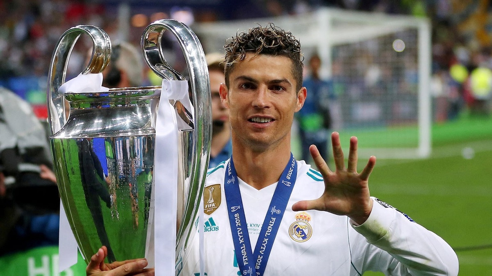

Криштиану Роналду — португальский профессиональный футболист, нападающий, капитан сборной Португалии и полузащитник клуба "Ювентус".

Роналду родился 5 февраля 1985 года на острове Мадейра, Португалия. Он начал свою профессиональную карьеру в клубе "Спортинг" и вскоре перешел в "Манчестер Юнайтед", где стал одним из лучших игроков мира. В 2009 году он перешел в "Реал Мадрид", а затем в "Ювентус".
Криштиану Роналду известен своей скоростью, техникой и способностью забивать голы. Он является обладателем множества наград, включая пять "Золотых мячей".
Помимо футбола, Роналду активно занимается благотворительностью и является одним из самых популярных спортсменов в мире.
Криштиану Роналду продолжает играть на высоком уровне и вдохновлять миллионы болельщиков по всему миру.
Толығырақ: Wikipedia